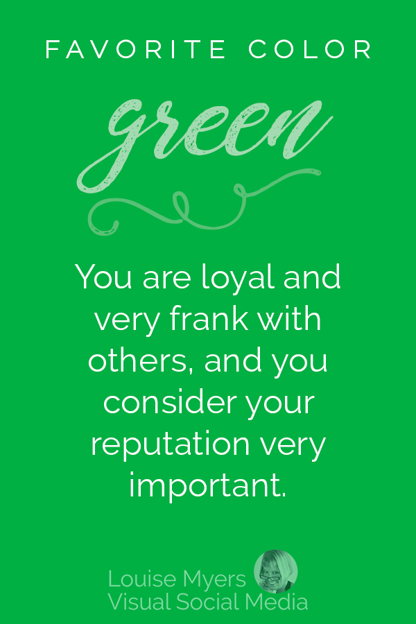

You are loyal and very frank with others, and you consider your reputation a very important part of your life.
If green is your color, you are a good citizen and pillar of the community. You are frank, moral, reputable, and sensitive to social customs and etiquette. You feel deep affection for your family.
You have a special connection to nature. It feeds your soul.
Whether it is spending time in the garden or finding creative ways to bring the outdoors in, your favorite activities revolve around all that Mother Nature has to offer.
You dislike chaos and strive for consistency and balance.
Time management is a strength because you quickly prioritize.
You have business savvy because you target what is most important and delegate what is not.
You rarely sweat the small stuff.
You are environmentally aware and involved in community affairs.
You have a knack for seeing the big picture and understanding multiple points of view.